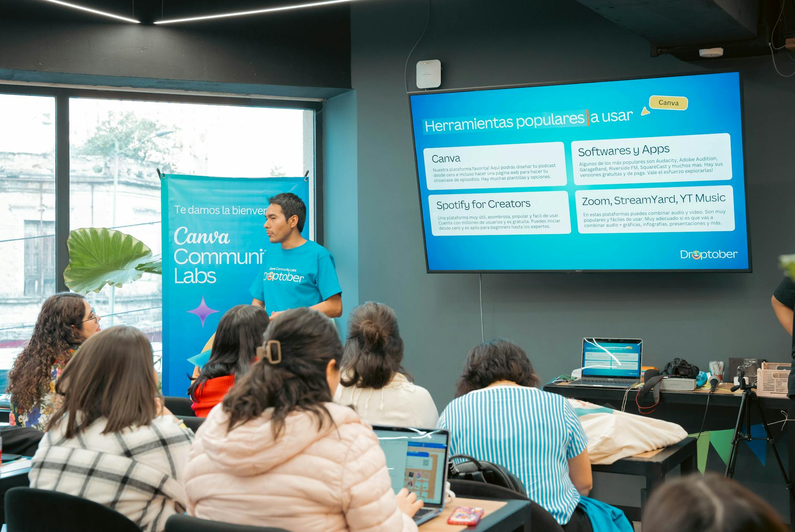

TL;DR
To efficiently manage multiple projects, establish a tailored workflow using tools like ClickUp and Notion, especially as project complexity grows. Regularly review your tool effectiveness to avoid chaos and missed deadlines.
Freelancers: Finding Your Ideal Project Management Tools
Managing multiple projects simultaneously can feel overwhelming for freelancers. You might juggle several clients, each with unique requirements and deadlines. Without the right tools, it's easy to lose track of tasks and jeopardize your reputation.
This guide targets freelancers seeking effective project management strategies to keep their work organized. For instance, consider a freelance graphic designer managing five different clients, each demanding various deliverables, projects, and timelines.
To avoid chaos, selecting the right project management tools tailored for their needs is crucial.
Why Default Project Management Advice Often Fails

A common mistake freelancers make is sticking to default project management recommendations without evaluating their unique needs. Free tools like Trello and Asana are undeniably appealing because they don't strain the budget, but they often come up short when it comes to advanced functionality.
For instance, many users may love Trello for its intuitive drag-and-drop interface, yet it lacks features like time tracking and detailed reporting, which are crucial for larger projects.
A freelancer managing multiple clients might find themselves juggling tasks on Trello, easily losing track of deadlines as projects pile up and new requirements spring forth.
Let's consider a freelancer named Sarah, who specializes in web design. Initially, she used Trello to manage her projects, creating boards for each client. However, as her client list grew from 3 to 10 within six months, she realized the limitations of her current tool.
With increasing complexity came new challenges—she began to miss deadlines due to insufficient tracking capabilities. For Sarah, moving to a paid tool like ClickUp, which offers features like task dependencies and built-in calendars, became necessary.
By investing $5 per user per month, she not only gained a more scalable solution but also improved her workflow significantly. Now, with automated reminders and integrated time tracking, she’s able to spend less time managing tasks and more time focusing on creative work.
Additionally, while using free tools, Sarah had to dedicate an hour each week just to rearranging her Trello boards, keeping things in line. With ClickUp, this administrative time was reduced to 15 minutes, affording her 3 additional hours each month to work on client projects or even recharge.
These trade-offs are crucial; freelancers must evaluate whether saving money upfront is worth the potential chaos down the line. Understanding the scale and specific demands of your projects and adjusting your tools accordingly is central to selecting a solution that will grow alongside your career.
Establishing an Effective Project Management Workflow
To streamline your project management, establish a workflow that suits your client volume and project types. Start by identifying the complexity of your tasks, then categorize them.
For instance, if you're managing three clients, identify their individual workflows: repetitive tasks can often be managed in free tools, but for unique, complex projects, consider premium solutions.
Here's a potential workflow for freelancers:
- Assess the tasks for each client.
- Categorize tasks based on complexity and time requirements.
- Evaluate your current tools and identify gaps; if a task takes more than twice the expected time, it might be time to upgrade.
- Set a 30-day review cycle to analyze your productivity and tool effectiveness.
- Make necessary adjustments to your toolset according to your findings.
This method not only enhances performance but also prevents project chaos.
A Real Scenario: Selecting the Right Project Management Tool
Consider Rachel, a freelance content marketer handling multiple clients. Initially, she used a combination of Google Sheets and free tools, but soon found it challenging to track deadlines and content revisions.
Her workflow was disjointed, causing missed deadlines. After recognizing her struggles, she took systematic steps:
- Tracked her client work for one month, identifying bottlenecks.
2.
Researched recommended tools, focusing on ClickUp and Notion.
- Subscribed to ClickUp after a month of trials, realizing it provided visual project tracking, timelines, and dashboard views tailored to her work.
- Set a recurring weekly reminder to check project statuses, avoiding miscommunication with clients.
Rachel's approach eliminated chaos, leading to timely deliveries and happier clients.
Recognizing Common Mistakes and Tradeoffs in Tool Selection
Freelancers often fall into traps when selecting tools, primarily focusing on price. A significant mistake is underestimating total costs; some tools appear inexpensive but have hidden fees.
For example, opting for a free version may lure you in, but as your needs grow, the swift transition to premium pricing may pinch your budget significantly. Additionally, frequent updates or user caps can lead to frustration as projects grow.
Assess the 'total cost of ownership' per tool, which includes subscriptions, add-ons, and time spent training. Choosing tools with hidden costs can backfire, making a seemingly cheap tool an expensive burden over time.
Always balance price with functionality to ensure long-term viability.
Making the Smart Choice: Best Tools for Each Freelance Type
Selecting the right tool often means tailoring to specific freelance niches. For instance, graphic designers benefit from tools like Adobe Workfront for its visual capabilities, while developers may prefer Jira for integration with development workflows.
Writers might find tools like Notion ideal for document organization. The key is to ensure the tool aligns with your immediate needs:
- Designers: Adobe Workfront to streamline creative projects.
- Developers: Jira for agile project management.
- Writers: Notion for the built-in note-taking and organization features.
Assess your work style and experiment with tools that cater to your niche. Always set aside time for a trial period, ensuring the tool's features meet your freelancing demands, with a scheduled monthly review to assess the effectiveness.
FAQ
What are the most cost-effective project management tools for freelancers?
Free tools like Trello and Asana may help initially, but consider investing in ClickUp or Notion as your project complexity increases for enhanced features.
How can I streamline my project management process?
Establish a workflow to categorize tasks based on complexity, regularly review tool effectiveness every 30 days, and adjust accordingly to improve your project management.
This article has been reviewed for practical usefulness and updated based on the latest tool developments.
Turn this into a workflow
Do not stop at ideas. Pick one workflow, test it for 14 days, then keep only what reduces friction.
Search more articles
Find related tools, workflows, and guides.
Photo credits
- Photo 1: Jingsi Lee via Unsplash
- Photo 2: Viridiana Rivera via Pexels
- Photo 3: Christina Morillo via Pexels
- Photo 4: RDNE Stock project via Pexels
- Photo 5: Domingos Henriques via Pexels